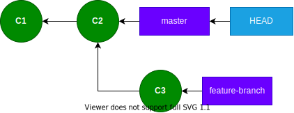
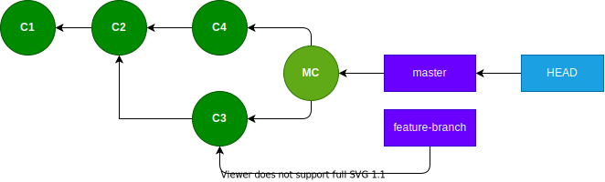

Git Internals
Part 3: Merging
Part 2: Branches, HEAD, and Tags

Overview
- Two types of merges:
- fast-forward
- true merge
- merge commits
- Command-line options
Fast-forward Merge
Default behavior when merging a descendent branch.
Fast-forward merge

$ git merge-base --is-ancestor master feature-branch && \
echo yes || echo no ⏎
yes
Fast-forward Merge
git merge feature-branch ➜
Fast-forward Merge
True merge ➜
True Merge
Required when merging a divergent branch.
True Merge

$ git merge-base --is-ancestor master feature-branch && \
echo yes || echo no ⏎
no
True Merge
git merge feature-branch ➜
True Merge

Command-line options ➜
Command-line Options
git merge --ff <branch>
(Default) Fast-forward when possible, otherwise create a merge commit.
git merge --no-ff <branch>
Always create a merge commit.
git merge --ff-only <branch>
Fast-forward when possible, otherwise exit.